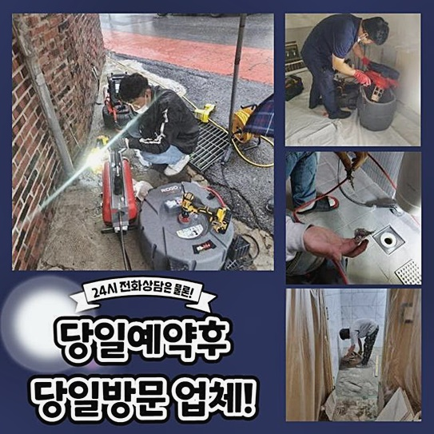
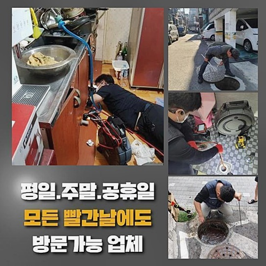
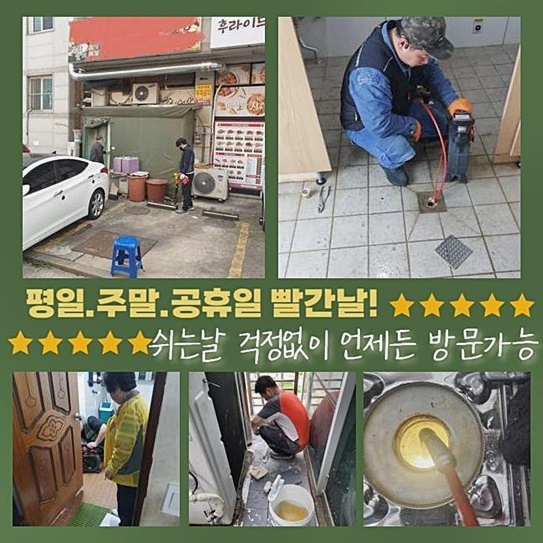
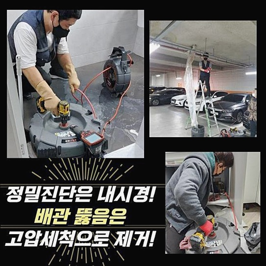
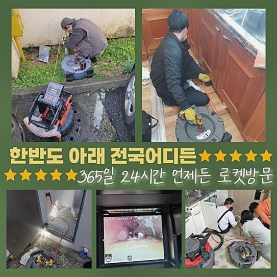
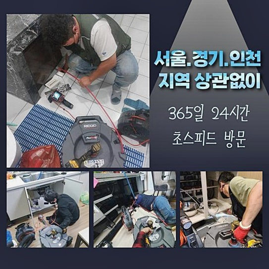
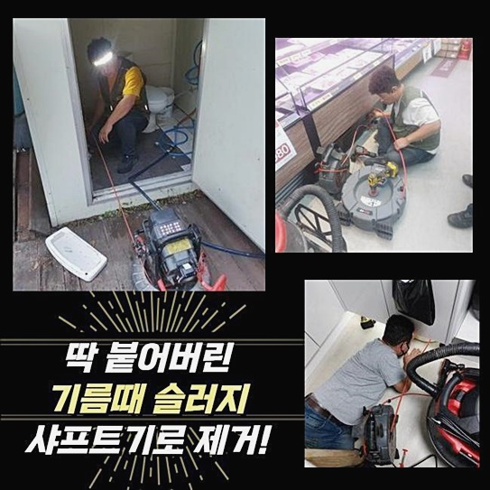

🏠 구로구 신도림동화장실역류 천왕동 하수구청소 부속수리
용인 하수구막힘 전문 시공 후기

📋 작업 개요
- 위치: 용인
- 서비스 유형: 하수구막힘, 배관막힘, 역류해결, 배관청소, 고압세척, 설비공사, 배관보수, 악취차단
- 작업 일시: 2024. 9. 13. 21:39
- 업체명: 하수구수사대 (010-5615-2118)
🔍 문제 상황
구로구 신도림동화장실역류 천왕동 하수구청소 부속수리
다수의 세대가 함께 옹기종기 모여있다면 여러가지 사연으로 하수의 흐름이 끊어집니다
오늘 알려드릴 장소는 역시 다세대 건물이었습니다 빌라의 1층에서 하수구 기능이 마비되어 정상적인 생활이 힘드셨던 사태를 맞이하셨습니다
물이 내려가지 못하거나 역류 증세가 나타난다면 가장 밑에 위치한 세대에서 처음으로 감지될 때가 많습니다
밑집이 손해를 입는 사유를 생각해보면 배관이 제작 때부터 가졌던 형상으로 인한 결과인데요
하수를 들여보내고 내보내는 절차를 부드럽게 달성되도록 만드려면 모든 세대 배관들과 주요한 굵직한 배관이 똑같은 이동경로로 합류됩니다
보통 파이프들은 연결감을 갖고 있으므로 이물질이 어떤 깊이에서 껴서 정상적인 배출이 중단되고 이상 증세가 형성되는 상황 속에서는 비단 한 군데에서만 오류가 비춰지는 게 아니라 빌딩의 여러 층수에서 저마다의 증상이 나타나는 곤경에 처하기도 해요
더러운 물의 역행을 비롯한 정상 경로의 일부가 차단된 파이프 때문에 어느곳보다 밑에 위치한 세대에서 수해 및 데미지를 상당하게 감당하고 계셨습니다
건물의 정화를 담당하시는 관리 스텝분께서 건물 배관이 중단된 사태라고 얼른 와달라 서비스를 의뢰하셨습니다!
물의 배출이 원만하게 무언가의 원인으로 막혔으니 다른 주민에게도 불편함이 전달되고 있는 상황에 직면하셨습니다
대강 피해사례를 들었던 내용을 되새김하면서 출동 전 시뮬레이션을 돌려봤고 장치를 모두 동반해서 보수해 드리려 이동했어요

🔎 원인 분석
💡 전문가 진단: 정밀 진단 장비를 사용하여 슬러지의 고착 여부를 판명하고 타격/세척 작업을 실시했습니다.
하수구가 고장나는 사건은 새벽대라고 하더라도 단독이건 다중주택이건 직면할 수 있는 문제입니다
딱히 말썽이 없더라도 하수설비에 대한 문제에 촉각을 곤두세워서 잘못된 낌새가 보일 때 빠르게 대응할 수 있는 지식을 든든하게 알아두는 것이 가장 현명합니다!
장기간 근무를 해오면서 다발적인 오류가 있더라도 예리한 눈으로 판별하여 손을 봐드리고 있으니 언제라도 얼른 전화를 걸어주세요
주소지에 도착하면 무엇보다 먼저 무슨 상황에 놓였는지 여러 수단으로 관찰해 봅니다
전화로도 이야기를 들었지만 전문적 안목으로 보았을 때 잘못됐다 싶은 점들은 아예 다르게 받아들여질 수 있으니 초반에 진단을 하고 들어갑니다
일단 압력을 가하고 보는 것보다 세부적인 이유를 알아내야만 업무에 대한 완결도가 상승되기 때문입니다
역류된 물로 엉망이 된 장소의 곳곳을 보며 건물에서 나타나는 증상들을 일시에 타개해 낼 수 있는 해결책을 물색해 봐요
우선 중앙 관로부터 검토하면서 막힘을 빚은 사유를 추적해 봤습니다
각 세대에서 한곳으로 모인 하수의 잔량이 걸림 없이 내려가지 못하게 한 대상물은 각종 이물질이 뭉쳐있는 덩어리가 통로를 가득 가로막고 있었기 때문인데요
이처럼 봉인된 상태에서 수돗물을 소량만 배출을 시도해도 겉으로 치솟으면서 문제가 생긴 메인관의 가장 밀접한 높이에 있는 제일 밑 세대에서 물이 바깥으로 터져나오는 현상이 금방 촉발된 것이죠!
하수구 설비를 담당해 오며 여러 작업지에서 까다로운 막힘들을 처리해온 일들이 밑거름이 됐기에 이러한 다분히 농축된 노하우로 사태를 초래한 사유와 가장 효율적인 노선을 발견해 내게 됩니다
이런 배관을 지나서 물을 내려보내면서 음식물과 같은 작은 찌꺼기들도 함께 휩쓸려갑니다

🔧 작업 과정
이런 잡다한 물질들이 축적되면서 하수구를 망가뜨렸다고 가늠할 수 있었는데요!
끼인 이물을 걷어내는 작업으로 기본적인 싹을 잘라버리는 것이 오늘의 관건이었어요
막힘 원인을 뚜렷하고 극명하게 알아내는 조사 단계가 최우선적인 과제이므로 배관 내시경을 도달시켜서 내측의 상태를 분별하는 업무를 진행시켜 나갔습니다
많은 고객님들이 내시경은 신체를 들여다보기 위해 고안된 도구로 받아들이시지만 설비의 속을 탐색할 수 있게끔 생산된 관찰용 기기입니다
파이프는 매우 길이가 길어서 사람의 시력만으로는 심층부의 내막은 인식하지 못하는 제한된 성격을 지니고 있으니 이런 조건의 내부 상황을 실시간으로 중개하는 모니터링 기기가 필요한 것이죠
능력이 뛰어난 기기의 가치는 하수구를 데미지를 주지 않고도 차질 없이 문제를 개선하기 위함입니다
꼼꼼하지 않은 태도나 장비 운영은 멀쩡했던 하수구에 역으로 데미지를 입혀서 하수시설의 전면 교체라는 공사로 사태를 장기화 시킵니다
노폐물들의 주된 구성물들과 넓이나 경화된 정도를 카메라로 알아차렸다면 다음 계획을 설계하는데 든든한 발판이 됩니다
도움을 줄 전문가를 찾을 때엔 다채로운 현장을 손봐온 경험들을 소유하는지와 자세하게 기술해둔 포트폴리오를 하나하나 짚어보시고 신중하게 판단하시길 바랍니다
주거지들은 배관들이 동일하게 설치된 것이 아니라 구조나 꺾인 모양도 다르고 여러 문제가 합쳐진 혼합형도 있어요
그렇기 때문에 내부를 샅샅이 들여다보는 일을 임할 때는 여러 섹션을 샅샅이 봐야하고 특정 지점에서 도드라지는 잘못이 있다 해도 이 장소를 포함하여 더 깊은 측면의 깊이까지도 동시에 확인해줘야 해요
이슈가 발생한 곳을 발견했다면 이 안으로 무슨 기기를 써서 장애물을 소거시킬 것인지 노선을 잡아야 합니다
방해 요소를 걷어올리려는 목적으로 쓰는 기기는 다채로우나 적절한 방책을 결정해야만만만 고질적인 장애물을 속 시원하게 극복할 수 있는 것이죠
체크를 통하여 문제가 제일 악화된 지점을 골라서 방해 요소를 걷어올리려는 목적으로 물대포를 분사하는 세척 방식으로 통로를 개방해 주었습니다
딱딱하게 말라붙은 고착물이 있는 파트가 간혹 보인다면 회전력이 기가 막힌 플렉스 샤프트를 파편화를 시켜서 없앱니다
이 기계장치는 내측에 화석처럼 굳어진 이물을 파쇄시킨 후에 휘감아 꺼내는 식으로 세척에 도움을 줍니다
통로를 말끔하게 만들고 높은 압력의 물을 적절히 분사해서 잔뜩 오염된 배관을 말끔하게 청소합니다
이물을 남김없이 탈락시켜야 다시 하수구에 기름진 덩어리가 생성되지 않는 철저한 정화를 이뤄낼 수 있어요


✅ 작업 완료
강력한 석션 기기를 통해서 죽처럼 갈린 오물들을 철저하고 남김 없도록 외부로 유출시켰습니다
미흡한 손길로 찌꺼기가 남아서 다시 차단되어 버리는 사고는 용납할 수 없는 만큼 중간 점검을 위한 카메라를 주입해서 남아있는 분량이 없도록 세밀하게 살피며 작업했습니다
하수도는 여러군데에서 폐기된 이물이 모여드는 곳이기에 사건이 터지기 전에 예방해야 합니다
내부 진단을 주기적으로 해주고 내부 정화 작업을 해준다면 세대들이 피해를 보지 않고 편안하게 쓸 수 있답니다
하수관이 소통되지 못해서 초조함을 느끼고 계시면 책임지고 고쳐드릴 준비가 되어있으니 서비스를 요청해 주시면 좋겠습니다!




⚠️ 하수구 배관 막힘 예방 및 관리 가이드
- ✅ 머리카락, 비닐, 물티슈 등 물에 분해되지 않는 이물질은 하수구 유입을 절대 금지해 주세요.
- ✅ 하수구 거름망을 씌우고 모여진 이물질은 주기적으로 쓰레기통에 바로 비워주셔야 합니다.
- ✅ 배관 노후가 심할 경우 이물질이 더 쉽게 걸리므로 주기적인 배관 세척(고압세척 등)을 권장합니다.
- ✅ 작업 후 1년 이내 재발 시 하수구수사대에서 무상 A/S 보증 서비스를 제공합니다.
💡 핵심 정리
- 확실한 장비 작업(내시경 점검 및 샤프트 스케일링)으로 원인을 뿌리 뽑습니다.
- 작업 후 1년 이내에 동일한 부위 재발 시 100% 무상 A/S 서비스를 보장합니다.
- 서울 · 경기 · 인천 전 지역에 24시간 언제든 긴급 출동할 수 있도록 항시 대기 중입니다.
❓ 자주 묻는 질문 (FAQ)
🚨 용인 하수구막힘 문제로 고민이신가요?
정확한 원인 진단과 확실한 시공으로 재발 없는 해결을 약속드립니다.
24시간 긴급 출동 | 서울 · 경기 · 인천 전지역 | 1년 내 재발 시 무상 A/S